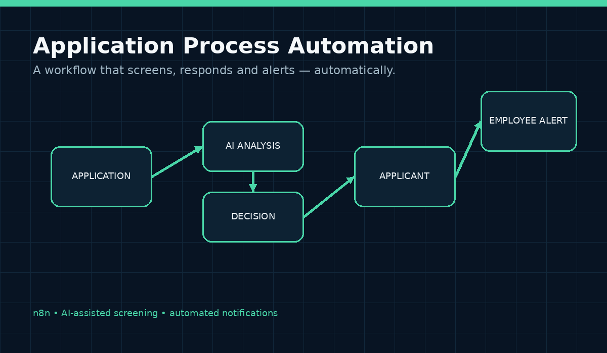

Overview
What I built
Designed an automated application-processing workflow using n8n to reduce repetitive screening and communication tasks. The workflow is structured to receive applications, analyse candidate information against defined requirements, send an appropriate response to applicants and alert an employee when a candidate qualifies for further consideration.
